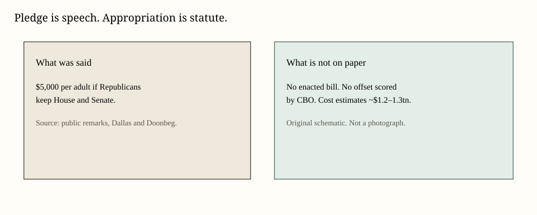
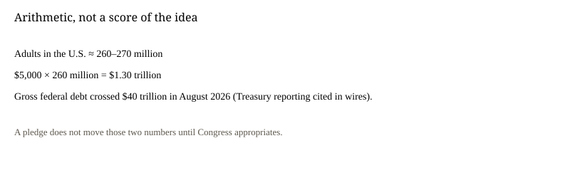

United States · midterms · 13 September 2026
Trump restated a $5,000 adult payment if Republicans keep Congress. No law exists.

What is agreed across desks
President Donald Trump first attached a $5,000 “Trump Dividend” to a Republican hold on both chambers during a midterm convention speech in Dallas. On Sunday, speaking to reporters in Ireland, he repeated the condition. The Guardian quoted him: “I don’t know but it’s easy if the Republicans win. $5,000 to all adults in the country and we can easily handle that because we’re taking in so much money.” He added that Democrats “can’t make that pledge.”
Reuters, writing from Washington on 10 September, described Republican skepticism the day after Dallas. It put a rough cost at $1.2 trillion plus interest if Congress approved a payment to adults. The New York Times used a similar arithmetic on a universe of about 270 million adults and a figure above $1.3 trillion. Those are multiplications, not enacted scores. The U.S. Treasury’s debt total was already being reported above $40 trillion in August.
Ohio Republican Senator Bernie Moreno said on social media that he would “get a bill ready so that we can get the Trump Dividend passed immediately after the November 3rd election.” Majority Leader John Thune, quoted by the Times, called the vote count “a good question” and said the conference would “cross that bridge.” No bill text is on congress.gov as of this dossier.
What is only a quote
“We’re taking in so much money” is a claim about revenue, usually pointed at tariffs in the president’s other remarks. Tariff collections are published by Customs and the Treasury. They are not, in any table released this weekend, equal to $1.2 trillion of new disposable cash sitting in a locked box labeled Dividend. Treating the quote as a financing plan raises complicity.
Earlier “dividend” talk around DOGE-style spending cuts and tariff rebates is history, not cash in a checking account. Newsweek’s wrap listed prior pledges that did not become mailed checks. That is a useful comparison only if it is labeled as history rather than as proof that this pledge will fail or succeed.
Mechanism a reader needs
A president cannot write a Treasury check to every adult by press conference. Spending of that size is an appropriation. Appropriations originate in the House, pass both chambers, and are signed. Pay-for language, eligibility (adults versus tax filers versus households), and whether the money must be spent “in the United States” — a caveat in the Dallas remarks — are drafting fights, not slogans.
Inflation arithmetic is separate. Injecting more than a trillion dollars of transfers into an economy whose CPI-U is already printing 3.4 percent year-over-year is a demand shock if people spend the checks. That sentence is economics textbook, not a moral grade. Fiscal hawks in the president’s party used the $40 trillion debt stock as their objection. Democrats used the word bribe. Both are arguments. Neither repeals the need for a bill.
What this story is not
It is not a mailed check. It is not a CBO score. It is not evidence that tariff revenue already covers the multiplication. It is not a finding that voters will or will not change ballots because of the number 5,000. Those polls exist in other pieces and are not the object here.
Eligibility is the first drafting fight that a slogan hides. “Every adult citizen” is not the same universe as every Social Security recipient, every tax filer, or every household. A 17-year-old is not an adult. A non-citizen adult is not a citizen. Dual filers in one household could be two checks or one. Dallas language and Doonbeg language were not a statutory definition. Moreno’s promised bill would have to pick a universe before a Congressional Budget Office analyst could score it.
Timing is the second fight. “Immediately after the November 3rd election” is a political calendar. Appropriations for a fiscal year, continuing resolutions, and reconciliation instructions live on a different calendar. A Senate that still exists in lame-duck session can pass a bill. It can also fail to pass a bill. Thune’s “cross that bridge” sentence is an admission of that fork.
Prior transfers offer a comparison without proving a sequel. The 2020 and 2021 COVID-era payments were authorized by statutes with dollar amounts, phaseouts, and IRS delivery systems. They also arrived while the federal funds rate was near zero. A 2026 transfer of similar or larger gross size would arrive with CPI-U at 3.4 percent year-over-year and with diesel near $6. The inflation objection from some Republicans is that comparison, not a loyalty test.
Revenue talk needs a table. Customs duties are a real budget line. They are also sensitive to import volumes. If tariffs reduce imports, the duty base shrinks. Treating last quarter’s duty print as a permanent ATM for $1.2 trillion is an extrapolation. Extrapolations should be labeled.

Source articles and scores
| Outlet | Headline | T | N | C |
|---|---|---|---|---|
| The Guardian | Trump reiterates $5,000 ‘dividend’ pledge if Republicans win midterms | 90 | −18 | 88 |
| Reuters | Trump's $5,000 dividend plan draws some Republican skepticism | 94 | 0 | 96 |
| NYT | Trump Floats $5,000 ‘Trump Dividend’ Checks if Republicans Win the Midterms | 88 | −20 | 86 |
| Newsweek | Every dividend check Donald Trump promised, then what happened next | 82 | −8 | 78 |
Images: original SVGs. No news-agency photograph copied.